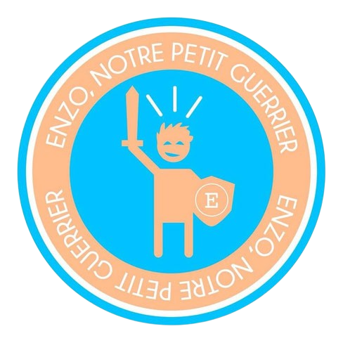
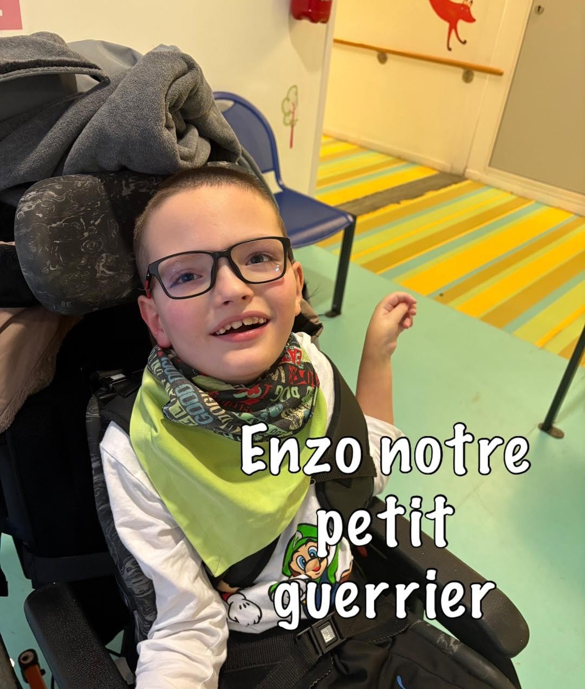

LE PROJET
AMB ENISE
est une association à but non lucratif composée d’une équipe de 15 étudiants de l’École Nationale d’Ingénieurs de Saint-Étienne (ENISE). 6 d’entre eux atteindront le sommet du Mont Blanc (à 4807 mètres d’altitude) avec des objectifs solidaires, citoyens et sportifs. La cinquième édition de l’ascension se déroulera en Septembre 2025.


LES PILLIERS
01 - HUMAIN
Le projet Amitié Mont-Blanc ENISE associe une aventure humaine hors norme à un défi sportif : l’ascension du célèbre Mont Blanc ou l’un de ses voisins culminant à plus de 4 000 mètres d’altitude. L’équipe complète compte 20 membres provenant de l’ENISE, issus de différentes formations et milieux sociaux. Ce grand nombre nous permet de garantir tous les deux ans une ascension. L’équipe qui se prépare à l’ascension du Mont-Blanc est composée de 6 à 12 étudiants en raison du budget important du projet. Tous les membres de l’équipe apprennent à se connaître au fil des entraînements et de l’avancement du projet. Ils apprennent également la vie d’association et de groupe, valeurs importantes dans la vie de tous les jours.
02 - SPORTIF
L’ascension du Mont-Blanc sera l’aboutissement d’un long travail de préparation à la fois physique et psychologique. Nous apprendrons à nous découvrir les uns les autres, mais surtout nous-mêmes. La solidarité au sein de l’équipe nous permettra de traverser les difficultés avec l’organisation et les entraînements, ou lors de l’ascension elle-même.
03 - CITOYEN
Nous prenons également le parti de promouvoir l’enseignement supérieur de la région avec ses établissements et plus de 28 285 étudiants. Nous souhaitons ainsi contribuer à l’émergence d’une « agglomération étudiante » en rendant visible nos écoles sur le territoire. En effet, nous sommes des étudiants originaires de départements et de régions différentes. Nous avons également proposé des partenariats à d’autres écoles de Saint-Étienne afin de créer des liens entre elles et favoriser les échanges.
04 - ÉCOLOGIQUE
De la même façon que Saint-Étienne Métropole et la Région, nous participerons à l’éducation au développement durable en réalisant une ascension zéro déchet. En effet, nous nous engageons à redescendre avec nous autant de déchets que notre condition physique nous le permettra lors de la redescente.
Nous cherchons également à transmettre à notre public, ainsi que nos sponsors, des valeurs fortes et des engagements clairs, principalement autour des deux axes de réflexion suivants : la surexploitation des montagnes et le dérèglement climatique.
05 - SOLIDAIRE
Notre objectif, en plus de relever un défi sportif, est également de récolter des fonds afin de venir en aide à une association régionale que nous soutenons. Cette année, nous soutenons association Enzo notre petit guerrier qui vient en aide à Enzo, un jeune garçon de 10 ans atteint de leucomalacie périventriculaire et de paralysie cérébrale.
Nous avons donc décidé qu’un pourcentage de la somme récoltée leur reviendrait : 5% des dons récoltés, ce qui représente près de 1000 euros si notre budget prévisionnel est atteint grâce aux partenaires et sponsors.

Association Enzo notre petit guerrier
NOUS AIDER
LE BUDGET PRÉVISIONNEL
Le budget prévisionnel du projet s’élève à 23 000 € pour faire l’ascension du Mont-Blanc pour l’équipe de 12 personnes et comprend :
- Les assurances
- La location de matériel d’alpinisme
- Le logement en gîte pour les journées d’acclimatation
- Le logement en refuge et la demi-pension lors de l’ascension
- Les guides de haute-montagne (1 guide pour 2 personnes) pendant 4 jours (2 jours pour l’acclimatation et 2 jours pour l’ascension)
- Les déplacements et la logistique
Comment nous aider ?
La recherche de fond est une étape clef de notre projet !
- LE PARTENARIAT FINANCIER : Il s’agit d’une aide financière qui nous permettra de payer nos dépenses afin d’effectuer notre projet.
- LE PARTENARIAT EN NATURE : Vous pouvez nous aider en nous fournissant du matériel ou en nous assistant dans notre préparation physique et notre formation ou en nous proposant toute autre sorte de service qui pourrait nous aider à accomplir notre projet.
Notre contrepartie
Chaque partenaire aura la possibilité d’avoir son logo floqué sur la banderole que nous acheminerons en haut du Mont-Blanc. Chaque année nous mettons tout en œuvre pour mettre en avant nos sponsors sur nos réseaux sociaux (LinkedIn, Instagram, Facebook...) et publions des articles dans la presse locale.
Vous serez alors visible au sommet, mais également sur les vidéos et photos faites tout le long de la préparation ainsi que sur les réseaux sociaux de l’équipe : Facebook, LinkedIn, Youtube et Instagram afin de toucher le maximum de clients potentiels.
De plus, c’est une manière originale de promouvoir votre entreprise en donnant une image solidaire et citoyenne à celle-ci.
Pour participer à notre incroyable aventure, devenez notre sponsor, ainsi vous serez un ambassadeur du projet AMB..
Le projet AMB 2025 se clôturera par un événement ouvert à tous avec une exposition photo et vidéo retraçant l’évolution de notre projet et une conférence durant laquelle nous présenterons un retour d’expériences.


NOUS CONTACTER